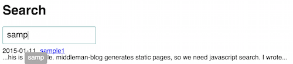

Javscriptのクラス対応(=React 0.13対応)のFlummoxを試してみた
前回の記事で快適なReact環境を手に入れることが出来た私ですが、Fluxを導入しようとして壁にぶち当たりました。
Fluxxorなどの有名なFlux実装などは StoreとComponentの紐付けに従来のMixinを利用することが前提となっていますが、ReactにおいてMixinはReact.Componentを利用していると使えません。
ちょっとGithubを見ていたらacdlite/flummoxが特徴にReact 0.13対応だと書いてあったのでとりあえずTodoを実装しまし...
React.jsをCoffeeScriptとjadeで書く
はじめに
-
React v0.13.0 Beta 1 | React
- React.Componentを使うと生のJSのclass形式でReact Componentを定義できる
-
reactjs - react-jadeでjadeテンプレートから仮想DOMを出力する - Qiita
- JSXのXの部分をjadeで書けるようにするライブラリ (Jade -> React VDOM)
ここあたりの記事を読んでRiot.jsなら素でできるCoffeeScriptとJadeの組み合わ...
Riot.jsでFluxのデモ実装した。
フロントエンド開発でコンポーネント指向で書きたいのは間違いないんですが、 Reactは簡単な事をするのにも大量のコードを必要として手軽に書くのには辛いライブラリだと思っていたところ、 Qiitaでよさ気なライブラリが話題になってました。
もともとfluxのデモコードがまったく理解できなくて悩んでいたところだったので2つのデモを実装しました。
jspmって遅い？
jspmについて
みなさんjspmってご存知ですか。 自分はQiitaの記事で知ったんですけど。
jspm で快適 javascript 生活（クライアントサイド JS の依存管理決定版） - Qiita
ES6 module loaderを利用してES6のimport文で前もってダウンロードしていたパッケージを読み込む仕組みになってるみたいです。依存も解決してくれるし特にnpmでもgithubでもbowerでもインストールできるのが明らかな優位な点っぽいです。
importって速...
Oboe.jsのデモ
今日はOboe.jsを触っていたのでその記事です。
Oboe.jsとは
JSONをストリーミングで読み込むライブラリです。通常のAJAXだとJSONをすべて読み込むまで待機するため 大きいファイルを扱ったり、モバイル環境のような低速環境だったりすると読み込み完了までなんの情報も得られない という欠点を改善してくれます。
とはいえ、いまいちピンとこないのでデモサイト作って動作確認してました。
コード例
とりあえずExampleを見る。
Oboe.jsの目的ではないが、AJAXライ...
middleman-blogでの検索機能をJavascript(React)で実装した。
middleman-blogの検索機能の前例はあるんですが jQueryを利用しているため宗教上の理由により使用できません。
説明
最近はReactが気になっているのでこちらで実装しました。
こちらがデモです。
 前例に比べて該当部分を表示する機能も追加したので使いやすいんじゃないかと。
実装
ソースコードはこちらです。
uzimith/middleman-blog-search-sample
参考にどうぞ。
所感
Reactのチュートリアル見ながら書いてたら簡単に書け...
middlemanでReactを書く
JavascriptのライブラリといえばAngularJSとかvue.jsなどが流行っていますが 今回はさらなる流行の最先端Reactです。
というわけで書き始めようと思うのですが、書き方がいろいろあって一番簡単なのはCDNを使うことです。
<script src="http://fb.me/react-0.11.1.js"></script>
<script src="http://fb.me/JSXTransformer-0.11.1.js"></script>
<script type...middlemanでファイルを書き換えてもサーバーに反映されない。
- OS X Yosemite 10.10.1
- ruby 2.1.2p95 (2014-05-08 revision 45877) [x86_64-darwin14.0]
- middleman (3.3.7)
middlemanいじってもconfig.rbやhelperメソッド書き換えても反映されなくて違和感を覚えていたらOSXのバグらしき報告がありました。
Middleman 3.0 requires manual server restart for any change in config...
ブログはじめる
ブログです。
基本的には個人情報を発信することに意義はないと思っているんですが、自身のコンテンツ力を上げていく必要性もヒシヒシ感じる日々なので、年も明けて始めるのにもちょうどいいんじゃないかと。
middleman-blogとかいうスゴいソフトウェアのお陰でvimさえあれば更新出来ちゃうので、自分みたいなものぐさな人でも軽く更新出来る予定です。
これでGithubのContributionsもガンガン増えちゃうね。